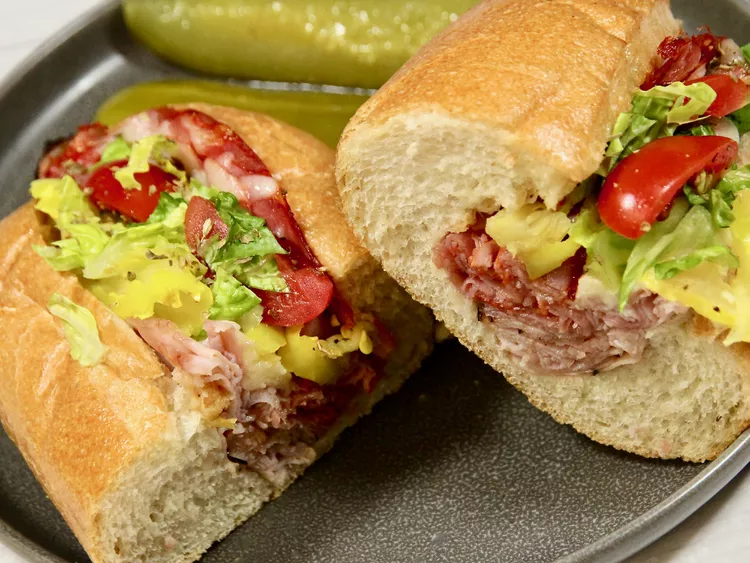

Baked Italian Sub

Ingredients
- 2 (7- to 8-inch) hoagie rolls
- 6 thin slices deli ham
- 6 thin slices Genoa salami
- 6 thin slices capicola ham (optional)
- 2 slices provolone cheese, halved
- 1/3 cup sliced banana peppers, or to taste
- tomato slices, to taste (optional)
- shredded lettuce, to taste (optional)
- thinly sliced red onion, to taste (optional)
- drizzle of olive oil
- drizzle of red wine vinegar
- 1 pinch oregano
- salt and freshly ground black pepper to taste
Directions
- Preheat the oven to 350 degrees F (175 degrees C). Line a baking sheet with parchment paper.
- Slice rolls in half lengthwise, but do not cut all the way through. Place rolls on the prepared baking sheet, open side up.
- Evenly layer rolls with ham, salami, and capicola, folding to fit. Place the halved provolone and banana peppers on top of the meat.
- Bake in the preheated oven just until cheese starts to melt, 5 to 8 minutes.
- Remove sandwiches from the oven, dress with tomatoes, lettuce, and red onion as desired. Lightly drizzle with olive oil and red wine vinegar; sprinkle with oregano and season with salt and pepper. Serve warm.